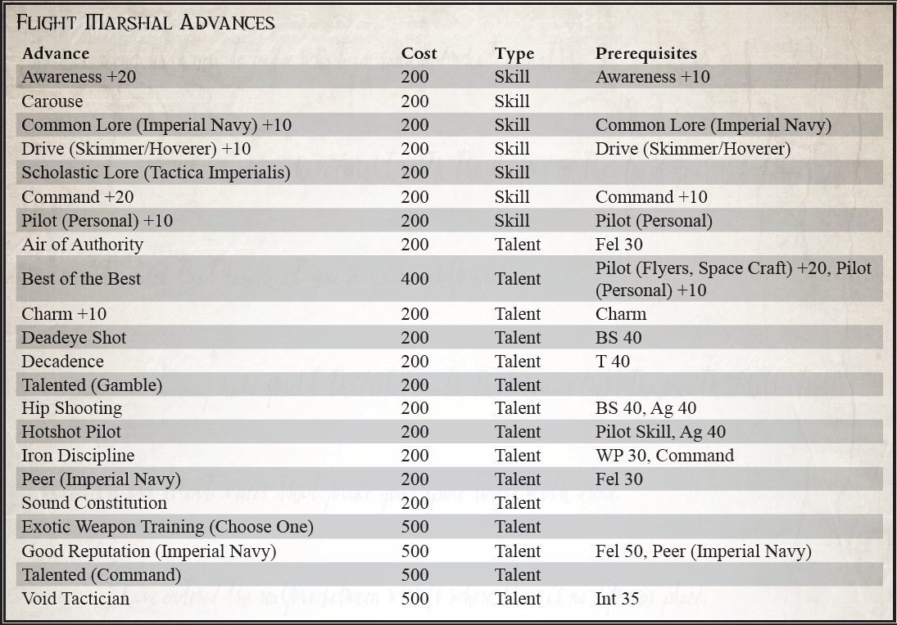

“你好，新兵。欢迎来到第三翼。首先，这不是海军或任何你来自的苔藓小便。你现在和幻影队在一起，这是这个地狱般的太空中最优秀的战斗飞行员，而我是他们中最优秀的战斗飞行员。所以，当我下达命令的时候，你最好把它当成是皇帝亲口说的！”
- 飞行元帅 Shioban O'Neill，呼号“毒蛇”，向第 3 狂暴拦截机联队的新飞行员致辞
许多虚空大师从飞行员开始，从小型大气飞行器到系统船，再到长达数公里的强大星际飞船，比如他们现在所服务的那些，在他们的家乡服务队伍中不断上升。然而，对于一些人来说，从优雅的战士变成笨重的大块头并没有什么吸引力。相反，他们继续驾驶小型飞行器——尤其是致命的帝国战斗机——将他们的技能磨练到人类耐力的边缘。对他们来说，没有什么比在空中或虚空中进行的缠斗更纯洁了，一对一直到一个死去另一个胜利。多年这样的战斗孕育了无与伦比的虚张声势。他们是一个不同的品种，一个与众不同的精英军团。领导这些飞行员的飞行元帅更是如此，因为他们不仅要具备飞行技能来谦逊他们的冲锋，还要具备领导技能，让一群敢于冒险的人成为一支有凝聚力的战斗力量。无论是在驾驶舱、简报室还是小酒馆，他们都必须比最好的更好，以确保他们的手下持续的忠诚和尊重。不断追求卓越的持续动力使 Flight Marshal 与众不同。
许多飞行元帅都是从当地的 PDF 或帝国海军开始的。在帝国的军队中，海军负责任何飞行机器，即使是那些仅限于大气层的飞行器。这些飞行员在大气攻击战斗机中磨练他们的技能，例如著名的雷电或闪电。在这些强大的位面和一群其他才华横溢的飞行者中，真正的战士开始出现，他们不仅能飞，而且能在发出命令和保护同伴的同时思考对手。他们学会了只信任他们的同伴，并通过他们在空中获得的呼号了解他们。任何不属于他们的战士群体的人都会被容忍——或者更经常地被忽视。确实，许多飞行员对空中对手的尊重比对自己这边的地面部队更为尊重。
其中最优秀的可能会驾驶空战机，在黑暗的太空中与巨大的狂暴拦截机和星鹰轰炸机决斗。这种飞行器非常庞大，需要一小部分机组人员来增强飞行员的能力。随着时间的推移，飞行员与他的机组人员建立了联系，就像他与其他飞行员一样。他们一起飞翔，一起战斗，最终——他们将一起死去。
飞行器也与他的飞行器形成了紧密的联系，逐渐感觉他的星际战斗机是他自己的延伸。他可以通过驾驶舱内的振动来衡量他的发动机的性能，即使他可以通过他的转向动作的敏锐度来判断他的海湾中还剩下多少吨军械。他和他的飞机紧密相连，每位飞行员都用他的呼号、中队徽章和其他个性化的艺术品精心装饰他的飞行器。当然，每一次杀戮也被显着地展示出来，描绘了飞行器的类型和飞行它们的敌人。那些与雇佣兵旅或盗贼商船队作战的人可能会展示他们的个人纹章或他们的领主指挥官的标记，尽管情况并非总是如此。虚空鲨中队作为永恒堡垒战斗联队的一部分飞行，因为他们逆转这种做法而在整个冬鳞国度中广为人知。他们死气沉沉的金属外壳，没有油漆和着色，反映了每个飞行员在冷静地击落遇到的每一个敌人时所表现出的冷酷无误的技能。
但是，飞行元帅不仅必须战斗，而且还必须指挥一场完全不同的斗争。通常，他指挥下的飞行员不断寻求挑战他。他们的领导者可能不是最优秀的技术飞行员，但必须更聪明、更敏锐，利用卓越的经验和知识证明他仍然可以超越任何人。他还必须像任何传教士一样鼓舞人心，用关于死亡和荣耀的激烈演讲来激励他的飞行员。知道什么可以保持团队精神并使他的飞行员成为虚空中最致命的群体，这是飞行元帅为了有效领导而必须学习的另一项艺术。飞行员知道帝皇守卫并引导着那些飞过虚空浩瀚空间的人，但他们的飞行元帅肯定会在每一步都与他合作。
成为一名飞行元帅通常不是主要飞行员会积极寻找的角色——通常这个角色被认为是自然发展的一部分。多年的飞行磨练了他们的战斗技能，而多年指导低级飞行员磨练了他们的指挥技能。发号施令成为第二天性，他们的能力就是这样，很少有人会质疑他们的指令。领导这样一个高度个人主义和意志坚强的团体是大多数帝国官员无法容忍的，特别是当飞行团体是雇佣兵或被绑定到流氓商人的阵营时。飞行元帅没有将不情愿的羊群赶到战斗中，而是小心翼翼地引导他的狼群，缓和它们的嗜血欲望并适当地引导它们的愤怒。
所需职业：虚空大师
替代等级：等级 4 或更高 (13,000 xp)
其他要求：飞行员（飞行器和航天器）+10，指挥
绝伦逸群（人才）
先决条件：飞行员（飞行器和航天器）+20，飞行员（个人）+10
Flight Marshall 简直就是天空中最优秀的飞行员，在虚空中，甚至在离地面 5 米的地方都敢于挑战。他的声誉是建立在高超的技能和精心培养的形象之上的；业内很少有人不敬畏他的传奇。海盗、叛徒、血红色的兽人战斗，甚至是优雅而致命的灵族海盗；到目前为止，没有人能打败他。
每当进行反对飞行员测试时，如果飞行元帅和他的对手都取得相同数量的成功，则飞行元帅被视为赢得测试（实质上，他赢得了平局）。飞行元帅在与帝国海军的其他成员进行任何对抗的互动技能测试时也会赢得联系。
